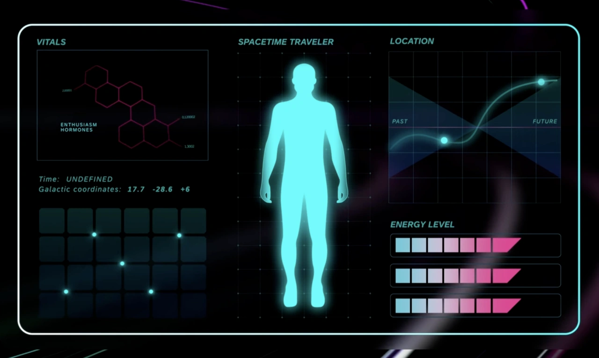

Events, film, concept, copywriting
SAP CEE
Three annual events for a market unit of one of the world's largest software companies — each year built on a single idea, then made to work across film, stage, print and an app in six hundred hands.

Context
SAP is among the twenty-five most successful companies in the world by Forbes's count, and is large enough to be split into market units. SAP Central and Eastern Europe is one of them, run in part from Ljubljana — and since a 2022 reorganisation it reaches into Western and Central Asia too. The relationship began small: when Top Stories could still count its staff on one hand, SAP asked whether the market unit's annual reports could stop being annual reports and become short films instead. It grew from there into three events a year.
Approach
Customer Success Kick-off — the internal one. Several days, held each year in a different Central or Eastern European capital, where the unit reports its results, awards its best people and sets out the strategy for the year ahead. We help build the governing concept. The most recent ran on Einstein's relativity: a month before, staff were invited on a three-day mission, expeditions to points in space and time to gather intelligence they would need for what was coming. The concept then had to hold across animated titles that opened each section, print, static graphics and the host's script.
A large part of the work every year is writing. The client runs the event through Eventee, an app that is the main channel to everyone in the room — push notifications for sessions, transport, meals and every change of plan. It runs both ways, so we write to draw people onto the social wall and keep quizzes running through the talks, with results appearing live on stage for the host to react to. We also write the host's linking script and every film script, including the nominee and winner announcements.
Partner Kick-off — the external one, a month or two later, for the partners who sell SAP software with their own tools built on top and account for a substantial share of its revenue. The content is close enough to the internal event that each year's concept can be worked again rather than started again. In Bratislava in 2023 we reworked the idea that had run internally on the unit's cultural range, which mattered that year: it made the newly joined Asian countries part of the room rather than guests in it. Alongside the titles, awards animations and app copy, we ran the technical team on site, and cut a reportage film afterwards that the client's team and the attendees posted to their own LinkedIn.
Quality Awards — the customer one, for the companies that implemented SAP fastest, most efficiently or most inventively. We first made it during Covid, when it could not be held. Rather than move it online as a virtual or hybrid event, we turned it into two series of films on LinkedIn: the first revealing the nominees in each category, the second telling the winning project in full. Client, partners and customers all shared them.
Material

Outcome
- Four consecutive Customer Success Kick-offs
- Around 450 people at the most recent, in Zagreb
- The Quality Awards reached beyond the room for the first time — client, partners and customers all posting the films
- The client kept the LinkedIn format after the pandemic ended, and reuses the films for internal best practice and for selling